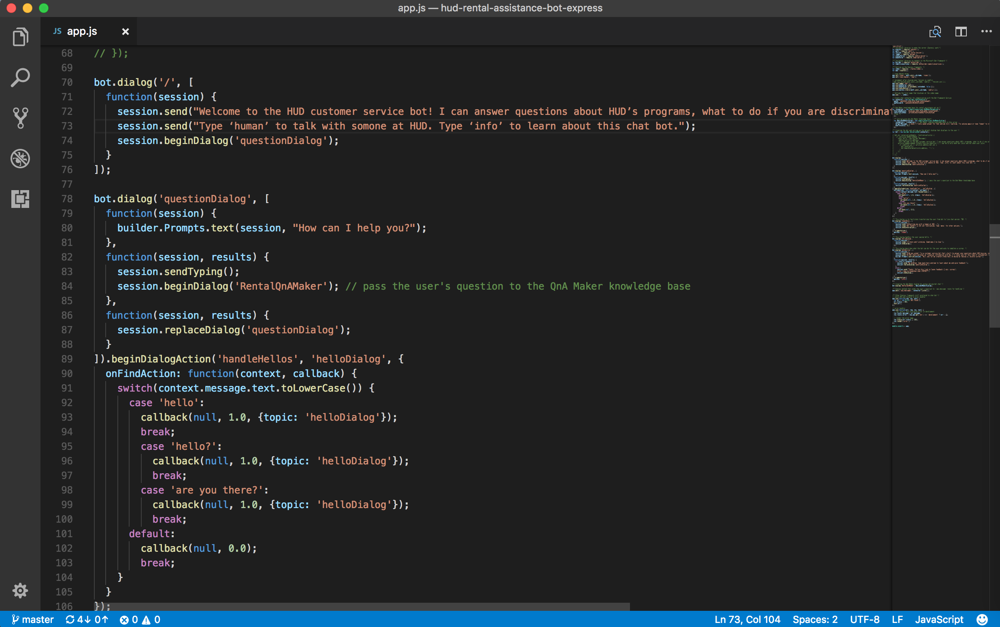

Mark Bubel

Augmenting staff ability with AI
Project goal
Augment the customer service ability of HUD staff to allow them to focus on cognitively-intense work.
Project outcome
This project is currently ongoing.
My Process
- Motivation
- Prototyping the bot
- Field research
- Next steps
Motivation
Federal government is starting to catch on to the private industry’s infatuation with new technologies like artificial intelligence, machine learning, and blockchain.
HUD hasn’t considered the use of AI technology yet to improve service delivery, for example. Of course, just because we’re not using AI doesn’t mean we need to start just to keep up with other agencies. GSA is a great example of AI being used.
However, our research shows from the CRM project that HUD may actually benefit from a chatbot service, specifically to improve customer service. I decided to start brainstorming ways in which a chatbot could help HUD:
- Our customer services research shows that the CRM is a welcome addition for staff in terms of tracking call metrics and having a singular view of the customer. However, they’re worried about duplicative or extra work. A chatbot could help automate some of the customer data collection and create records in the CRM on the behalf of HUD CSR’s, we could free them up to time-sensitive and resource-intensive tasks.
- Next up, a chatbot could help citizens find information at the medium they want. This is about allowing people to have choices and flexibility when contacting HUD for help and information. Right now, they can visit the website, or call us, really for the main options. I believe HUD needs to expand its digital presence and information to other channels, like Facebook Messenger, email, and text message, allowing that information to be accessed on demand.
- Helping find information on the website: HUD.gov’s website doesn’t always make it easy for a regular citizen without knowledge of HUD to find the correct resource, or understand it, or know what to do next to complete their goal. I think the chatbot can help facilitate information seeking on the website.
- Facilitating warm handoffs: imagine a scenario where the bot can’t answer a person’s question. This is where a HUD CSR person could join the conversation and take over, while the bot listens in the background. This is a better experience than just putting a bot out there that’s not helpful when it can’t answer questions. Trust in the bot could be negatively impacted. A citizen asking the bot check on statuses or outcomes connected to other data sources and possibly reduce the number of calls HUD or a PHA may receive.
Prototyping the bot
I wanted to quickly get a test bot up and running, and after comparing multiple bot frameworks and services, I settled on Microsoft’s Bot Framework.
The Bot Framework is a set of tools that allow the bot to have freeform or structured conversations with users. You can do this through simple text responses (natural language is possible), images, buttons, and speech which add interactivity to a bot. It also gives you the tools, to build, deploy and publish bots.
Part of the Bot Framework is the SDK that provides all of the features to actually build a bot. There are two options: Node JS framework (which is asynchronous JS that runs on servers) and .NET frameworks (using the C# language). Microsoft gives documentation for each framework as well as examples on GitHub which are very helpful. These examples helped me understand how to build the prototype.

The SDK provides the pieces to build the skeleton of a bot, test it out with an emulator program, which allows you to not have to first deploy your bot to test it and debug it. However, the appeal of bots is that that can have some form of AI.
Microsoft provides APIs to their Cognitive Services platform that you can use to provide the bot with natural language understanding, sentiment analysis, web search, computer vision. These are ideas that we as humans are automatically capable of doing. But, these APIs involve programming. To cut down on the amount of programming needed to get a working demo and to allow other non-technical people have a hand in actually building the bot’s knowledge, I chose the Microsoft QnAMaker service.

Field research
I’ve met with a couple people in my field office to talk about the bot, and we’ve shared it with the USA.gov team over at GSA, and I’ve given a demo and got feedback from the Philadelphia Public Housing Authority.
I gave a demo to senior management who want to keep pursuing it and put actual resources behind it.
However, the bot is for the citizen, and we need to test it with citizens.
Next steps
The next step we need to take is usability testing the chat bot. The bot web page includes a link to a very short survey, but we need to start collecting many responses of questions/answers to see what kind of questions people want to find out, if the bot can handle those questions, and if the bot needs changes. For example, the conversation is completely free-flowing right now, but we could add to the to UI to include buttons or menus to give a structured path to find information. Is that better? Testing it will help us understand these things.
Beyond user testing, I would like to collect quantitative data as well. To do that, the chat bot needs to live on one of our public websites or as a live Facebook messenger bot. These options are currently being considered.

Copyright © 2017 Mark Bubel